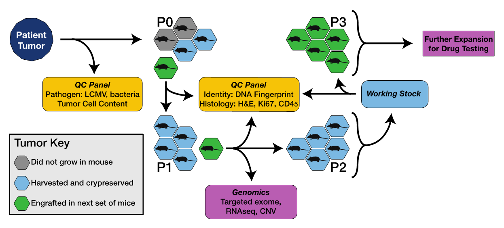

Last Updated: August 2020
Patient Derived Xenograft (PDX) protocols at The
Jackson Laboratory
Frequently Asked Questions (FAQ)
How are PDX models generated at The Jackson Laboratory (JAX)?
-
The JAX PDX Resource employs NOD.Cg-Prkdcscid Il2rgtm1Wjl/SzJ
mice (aka, NSG mice) as the host strain for xenografts. NSG mice lack mature T and B cells, do not have functional natural killer (NK) cells,
and are deficient in cytokine signaling. Consequently, the NSG mouse is a robust host for engraftment of human cells and tissues.
-
We do not implant tumors from patients that are known to be HIV, HCV or HBV positive.
The only human pathogen that is tested for is the rodent borne Lymphocytic choriomeningitis virus (LCMV).
We follow BSL-2 procedures in the handling of untested human tissue.
The model development process is shown in Figure 1.
Patient tumor cells are implanted with a trocar subcutaneously in the right flank of up to five, 6-8 week old female NSG mice.
An exception to the use of female NSG mice is made for engraftment of prostate tumor tissue.
Engrafted mice are held in quarantine until the LCMV test results are confirmed negative, at which time mice are moved into the PDX Resource vivarium.
If sufficient patient tumor is available, we assess tumor cell content and concordance with histological diagnosis provided by the donating center.
-
Implantations at each passage are considered successful if the tumor grows to 1000 mm3 within five months.
When a graft establishes, we expect 1-3 P0 tumors and all P1 and P2 tumors reach the target volume within that time frame.
All P0 and P1 are cryopreserved in 10% DMSO to allow for future development as needed.
The tertiary passage (P2) is banked to serve as the working stock for future expansion.
A portion of each tumor is sent for identity testing (via short tandem repeat, STR) and histology.
-
Detailed methods regarding the characterization of the genomes of engrafted tumors can be found in Woo et al., 2019.
-
Figure 1. Process for developing PDX models, including pathogen testing, genomic characterization and quality control (QC).

What Quality Control Procedures are in place?
The PDX models in the JAX PDX Resource are subject to the following Quality Control (QC) validation steps:
- The histology of the engrafted tumor retains morphologic features of the primary patient tumor as determined by a Board Certified pathologist.
- Immunohistochemistry (IHC) for human Ki67 validates that the engrafted tumor cells are actively dividing and are of human origin.
- IHC for CD45 and cytokeratin (AE1/AE3) rules out a xenograft-associated lymphocytic tumor.
- Simple Tandem Repeat (STR) analysis validates provenance of engrafted tumor.
How are cohorts of tumor bearing mice established for dosing studies?
-
For cohort expansion donor mice are created using viable, cryopreserved low-passage tumor fragments
(P2-P5 unless otherwise noted). With the exception of prostate tumors, all tumors are implanted in female
NSGTM mice.
Mice are between 6-8 weeks of age at the time of implantation. Tumors are typically
implanted subcutaneously into the right flank using a trocar. Breast cancer tumors are sometimes
implanted in the mouse mammary fat pad. Implantation site is subcutaneous unless otherwise noted.
-
Tumors used to establish donor mice are subjected to standard Quality Control procedures to ensure
tissue provenance and to validate key tumor markers.
-
Tumor bearing mice are grouped in cohorts of 8-10 mice using single or rolling enrollment for dosing
studies. Mice with tumor sizes of 70-300 mm3 are randomized between treatment groups. Baseline tumor
volumes are established and dosing initiation begins on Day 0 or Day 1.
-
Typical routes of drug administration are as follows:
-
Intravenous (IV)
-
Intraperitoneal (IP)
-
Oral gavage (PO)
-
Subcutaneous (SC)
What is the protocol for dosing and measuring drug response in PDX models?
-
Once tumors become palpable, tumor volumes are measured up to 3X a week with digital calipers. Mice
are monitored until their individual tumor volume reaches the approved protocol volume limit.
-
The in vivo response to treatment is assessed using the percentage of tumor volume change (ΔVol) at the
final study day (i.e., seven days after the last treatment) compared with the baseline tumor volume at Day 0
or Day 1. The criteria for response classification is based on the combination of the best
response and average response (see below) adapted from Gao et al., 2015 (Nature Medicine 21, 1318-1325).
Step 1: Calculate percent change in tumor volume for each animal as V: ((end_volume - start_volume)/start_volume) * 100)
Step 2: Within each group find the minimum V as Vm
Step 3: Within each group find the mean (average) V as Va
Step 4: Determine RECIST category as shown in the table below
-
| RECIST Category | Best Response: Vm | Average Response: Va |
|---|
| Complete Response (CR) | < -95% | < -40% |
| Partial Response (PR) | < -50% | <-20% |
| Stable Disease (SD) | < 35% | < 30% |
| Progressive Disease (PD) | Anything else |
How is animal welfare monitored during dosing studies?
-
Body weight and clinical observations, including body condition score, grooming and tumor integrity are
monitored up to 3X a week for the study duration. Additionally, daily cage side observations are conducted
to monitor animal welfare. Veterinary staff is contacted if animals show any signs of distress and veterinary
recommendations are followed.
What is the procedure for measuring tumor volume?
-
Tumor volume measurements are taken up to 3X weekly throughout the duration of each study to assess
tumor response to therapy. It is possible for tumor responses to initially exhibit regression (shrinkage) in
response to therapy and then resume progressive growth, therefore tumors must be continually monitored
throughout the study or risk missing this response. Tumor volumes are calculated from digital caliper raw
data by using the formula:
Volume (mm3) = (l x w2) / 2
-
The value w (width) is the smaller of two perpendicular tumor axes and the value l (length) is the larger of two
perpendicular axes. Mean tumor volume growth curves and means are calculated for each treatment group.
How are the results of dosing studies represented graphically?
-
The results of dosing studies are presented using 4 types of plots: Treatment Group, Spider, Waterfall, and Tumor Growth Inhibition. Each plot type is described briefly below.
-
Treatment Group plot. A Treatment Group plot is a line plot showing the average change in tumor volume for
all of the tumor bearing mice in a particular treatment arm (one line per treatment arm). Standard error bars are
typically included for each time point measured.
-
Spider plot. A Spider plot is a line plot showing the change in tumor volume from baseline for each tumor
bearing mouse in a study.
-
Waterfall plot. A Waterfall plot presents the response to a treatment for each individual animal in a study as
indicated by change in tumor volume. The data displayed on the graphic are limited to those mice that remain on study for the full duration of the project.
The plot reflects the difference in tumor volume at the end of the study
compared to initial tumor volume calculated on Day 0 of therapeutic dosing initiation. The horizontal (x) axis is
baseline; vertical bars are drawn for each tumor bearing mouse, either above or below the baseline. The
vertical (y) axis represents the % tumor volume change. Vertical lines above the x axis represent non-
responders; vertical bars below the x axis represent response to treatment. Waterfall plots are typically
displayed left to right from worst response to best.
-
Tumor Growth Inhibition (TGI) plot. The bars in the TGI plot summarize the % of tumor volume change in
treatment arms relative to the control. The % TGI is defined as (1 - (mean volume of treated tumors)/(mean
volume of control tumors)) x 100%.
Can I get the software for generating dosing study graphics displayed on the MMHCdb web site?
How do I access data and information about models in the JAX PDX Resource?
-
Data and information about PDXs in the JAX repository are available from the Mouse Models of Human Cancer (MMHCdb) database PDX portal and also from the PDX Finder database.
-
Help documentation for PDX related data in MMHCdb can be found here.